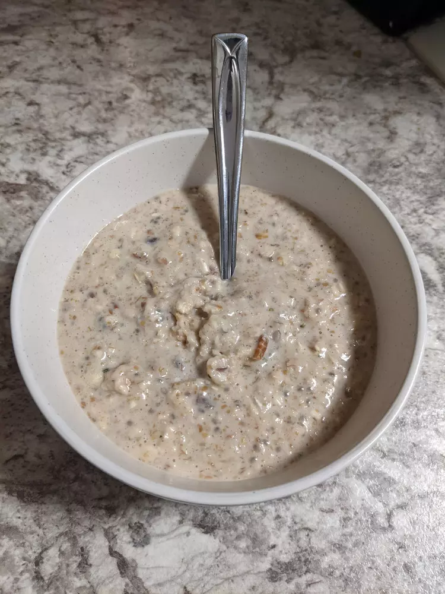
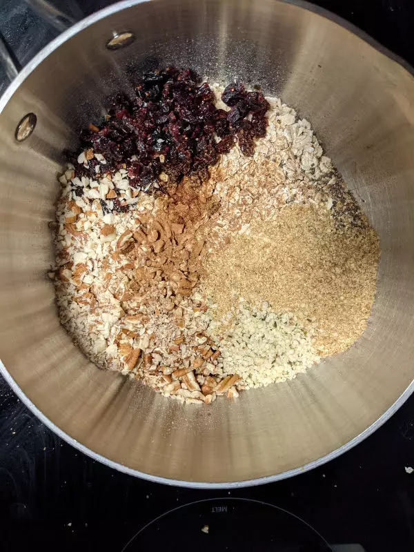

Hearty Breakfast Oatmeal

If your Oatmeal isn’t Hearty Breakfast Oatmeal… Is it even Oatmeal?
- ⏲️ Prep time: 5 min
- 🍳Cook time: 10 min
- 🍽️ Serving: 1 hearty serving
Ingredients
- ½ cup Large Flake Oats (no partially cooked quick-oats allowed!)
- Almonds
- Pecans
- 1 Tbsp Roasted Flax Seed
- 1 Tbsp Hemp Hearts
- Cranberries (adjust amount to preference)
- ½ Banana (mashed)
- 1 cup Milk (3.25% if possible)
- Cinnamon (adjust amount to preference)
- 1 Egg
- ON Vanilla Ice Cream Protein Powder (optional)
Directions
- Chop or mash nuts and fruit.
- Combine nuts, fruit, and other dry ingredients in a saucepan 
- Add milk and cook mixture over medium heat until oats are desired tenderness (5-10 mins)
- Add egg and protein powder and cook for a few more minutes
- Enjoy
Contribution
- Joel Farthing - GitHub